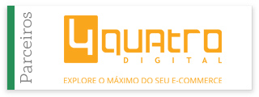
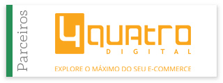

Nós somos
Agência de Marketing Digital com foco em performance. Trabalhamos dia a dia para extrair o máximo de resultados. Respiramos métricas, definimos estratégias, apresentamos soluções e só vamos para cama quando a missão estiver cumprida!
Saiba MaisPor que somos diferentes?
Full Service
Somos Full Service Digital, com foco em
performance. Isso significa que fazemos os 4
principais serviços do âmbito digital
(Campanhas, SEO, E-mail Mkt e Social Media)
- todos orientados para busca de resultado.
Análise
Informamos os resultados e evoluções
semanalmente (e mensalmente), através de
relatórios diferenciados e detalhados. Conhecemos
a fundo os detalhes e os diferenciais estratégicos
dos principais canais de mídia online.
Qualidade
Não temos clientes, mas, sim, parceiros! Possuímos
equipes especializadas, focadas para cada parceiro.
Conseguimos oferecer um atendimento muito mais
próximo, detalhista e customizado.
Oportunidade
Estamos em constante contato com
os canais de mídia para avaliar e testar
novas oportunidades de divulgação. Vestimos
a camisa do digital e garantimos aos nossos clientes
melhor em inovação, usabilidade e conteúdo.
Serviços
Alguns parceiros
M POZENATO
Fundada em 2006, a loja online Mpozenato comercializa móveis para casa e escritório, e desde então é uma das mais tradicionais no segmento. Em seu portfólio de produtos há desde Poltronas Decorativas, até Banquetas para Cozinha e Mesas para Escritório. Entre vários outros móveis para sala de estar, cozinha, quarto adulto e infantil.
A Compre Clicks administra todas as suas campanhas online, acompanha as métricas e define as estratégias de SEO, otimizando o site e ranqueando suas páginas no Google.


Em Breve
MILLI
A Milli está no mercado desde 2003. É uma das principais marcas no segmento de Moda íntima, Fantasias Eróticas, Moda Praia e produtos eróticos para Sex Shop. A Milli também se destaca em datas sazonais, neste ano a loja online disponibilizará diversos produtos eróticos e modelos de Lingeries em oferta na Black Friday. Além do e-commerce que se diferencia pelos produtos com ótimo custo-benefício, possui duas lojas físicas e um catálogo específico para quem pretende ser um Revendedor Sex Shop. Hoje, é uma das maiores distribuidoras e atacadistas de produtos eróticos do Brasil.
Nós, em conjunto com a Milli, desenvolvemos o branding da empresa através das redes sociais. Campanhas do Google, investimentos em performance e estratégias de SEO também são administradas pela Compre Clicks
MULTIAR
A Multi-Ar é uma das maiores revendedoras online de ar-condicionado do Brasil. São diversos modelos campeões de vendas: Ar Condicionado Inverter, Split Parede, Ar condicionado de Janela, Ar Portátil etc, além de Climatizadores e Cortinas de Ar. A empresa também disponibiliza um sistema de Cálculo de BTUs e atendimento específico para Instalação de Ar condicionado.
A Compre Clicks trabalha com todo o direcionamento de verba para campanhas de performance no Google, otimizando palavras-chave e controlando todo o investimento da empresa, tanto em branding quanto na busca por novos leads. Todo o trabalho de SEO da Multi-Ar também é analisado, acompanhado e executado pela Compre Clicks.
UNIÍTALO
Com mais de 65 anos de tradição, o Centro Universitário, UniÍtalo, está localizado em Santo Amaro, zona sul de São Paulo. Oferece cursos de graduação e pós-graduação, além de extensões presenciais ou a distância, reconhecidas pelo MEC. Uma das graduações mais requisitadas no campus são: o Curso de Administração, o Curso de Pedagogia e o Curso de Educação Física.
Proporciona excelente custo-benefício, com horários alternativos e infraestrutura diferenciada: quadras, biblioteca, piscina e laboratórios multidisciplinares.
Suas campanhas de performance no Google, para captação de novos alunos, são administradas pela Compre Clicks, assim como as estratégias de SEO – que ajudam a posicionar o UniÍtalo nas primeiras páginas da busca orgânica.
Em Breve
Scarf Me
Scarf Me é a marca que pode ser traduzida através de dois termos: tendência para sofisticação e estilo despojado. A loja vende lenços
(echarpes, foulard, panneaux e pashminas), roupas femininas e acessórios refinados, de máxima qualidade. Na Scarf Me você encontra
as últimas novidades em moda feminina.
A Compre Clicks é a responsável pelas estratégias de ranqueamento orgânico, análise de palavras-chave, mapeamento de mercado e
otimizações das páginas internas do site, além de toda a construção de link building da Scarf Me. As campanhas de Adwords e todo o
acompanhamento e otimização de ROI, com direcionamento de investimentos, também são feitos pela agência.
Em Breve
TNG
Desde 1984, a loja de roupas TNG veio ao mercado inovando a moda de alfaiataria masculina, e é uma das marcas mais consolidadas neste segmento, voltada ao público jovem. Hoje em dia, além do público masculino, a marca também atende a demanda de roupas femininas. Dispõe em seu portfólio de produtos roupas sociais, como os ternos, e roupas casuais, como camisas polos, calças jeans, bermudas, tênis, sapatos etc. Sem contar com a linha de roupas infantis.
A TNG também se destaca em datas sazonais, neste ano você vai encontrar as melhores Roupas na Black Friday. A loja virtual preparou diversos modelos de Camisas Polo na Black Friday, para você mudar de visual gastando pouco.
Aproveite também e complete o look com as Calças Jeans na Black Friday. Anote essa data e não perca!
A Compre Clicks é a responsável por toda análise, acompanhamento e execução das estratégias de SEO da TNG, ranqueando suas páginas na busca orgânica do Google.
50 MAIS SAÚDE
Como o próprio nome já diz, a 50 Mais Saúde vende produtos para saúde, voltados para a maturidade. Trabalha com linhas exclusivas, como o caso da marca Coloplast, que oferece produtos pós-cirúrgicos, como, por exemplo, para Estomia/Ostomia. A empresa conta com um variado portfólio, que dispõe desde meias Sigvaris anti-trombose até calça legging anticelulite, entre diversos outros produtos para maturidade. Além da loja online, possui duas lojas físicas.
Suas estratégias de SEO, desde criação e otimização de conteúdo até estrutura da árvore do site, são realizadas pela Compre Clicks, assim como as campanhas de performance para o Google, direcionando verba para captação de novos consumidores.
Em Breve
AGF PARTS
A AGF Parts tem foco nos produtos de som automotivo e demais acessórios para veículos. Na loja online, você encontra desde Caixas de Som Automotivo até alto falante para porta e Subwoofer Pioneer, além de CDs e DVDs Players de marcas renomadas como Falcon e Buster, entre diversos outros acessórios que englobam sistemas de som ambiente e profissional.
Todas as suas estratégias de SEO, e de campanhas de performance para o Google, são realizadas, medidas e construídas pela Compre Clicks. Isso significa: direcionamento de verba para captação de novos leads, produção e otimização de conteúdo para posicionamento orgânico, e análise de site (estrutura e mapeamento das páginas), entre diversas outras estratégias de business avançadas.
Depoimentos
"A Compre Clicks é uma Empresa séria e muito comprometida com seus clientes, além de oferecer um excelente serviço ! Minhas vendas aumentaram significativamente logo após a contratação dos anúncios de Adwords. Estão sempre me atualizando e me mostrando os resultados com envios frequentes de relatórios. Estou muito satisfeita e indico de olhos fechados."
Danielle França - Bergvet
"Trabalhar com a Compre Clicks é uma ótima experiência, onde há ricas trocas de conhecimento e ideias e além do excelente atendimento. O ponto mais forte da agência é levar a sério o real sentido da palavra parceria. Possuem foco em resultado, encaram desafios e dificilmente existe um "não" para eles..."
Margareth Hayashida - Multiar
"Sempre preferimos trabalhar com parceiros que estivessem próximos à nossa operação e os relacionamentos facilmente acessíveis.Na estratégia de marketing digital desenhada a quatro mãos foi essencial a experiência e a disponibilidade da equipe da COMPRE CLICKS em entender nosso perfil de comunicação. Encontramos neles exatamente o tipo de parceria que buscávamos."
Carlos Otávio - Bento Store
Certificados
 
 Contato
Preencha o formulário abaixo e nossa equipe de especialistas entrará
em contato para conversar sobre suas campanhas e como podemos
fazer a diferença para sua empresa:
Rua da Paz, 1.252
Chácara Santo Antônio,
São Paulo – SP
CEP: 04713-001
(11) 4563-2639
(11) 2506-6680
contato@compreclicks.com.br